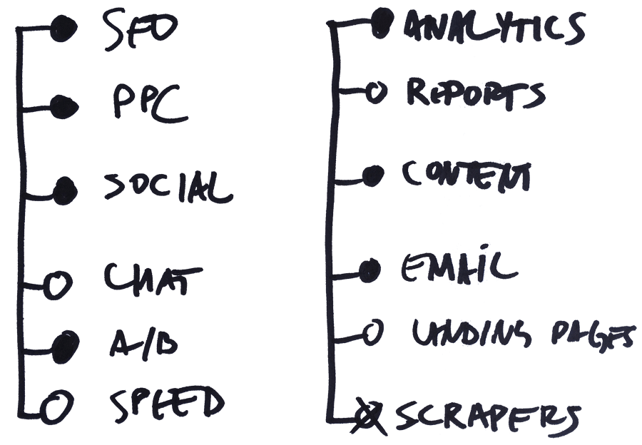
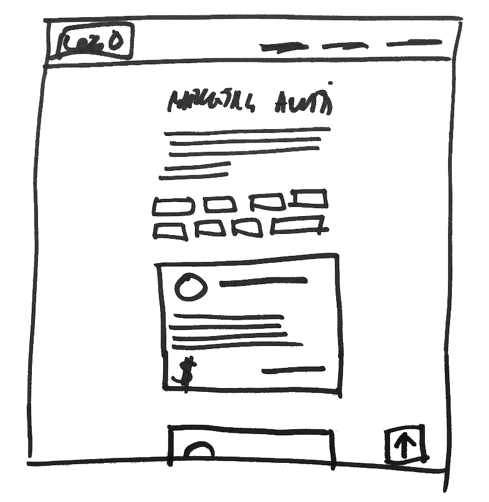

“Hajde idi na marketing alati tačka kom. Možeš i na telefonu. Kucaj sve zajedno ono marketing alati.”
“Aha, evo… Šta ti je ovo?”
“Ma nešto moje, ovo za vikend što sam kuckao.”
Ovo je razmena koje se desila 27.07. u ponedeljak ujutro. Taman sam se spremao da pustim link na društvene mreže, ali sam uleteo u posao. Posle 6pm nije imalo smisla da objavljujem.
Zapravo sam propustio i utorak jutro. Tek oko podneva sam se setio da šerujem link na dve FB grupe. Opet sam prvo radio klijentske stvari. Na kraju dana sajt je imao skoro 1300 poseta, 30+ šerova, a o projektu je pisao Startit.
Ovo je priča o nastanku sajta Marketing alati.
Godinama sam član marketing FB grupa i redovno zapisujem česta pitanja koje ljudi postavljaju. Ako isti problem ima 5-6 osoba onda sigurno da postoji stotinak ljudi koje zanima ista stvar, samo što ja ne znam za te ljude.
Koji kursevi, kako početi, koje alate koristiti, kako uraditi nešto u Facebook Ads, ko piše dobar sadržaj na engleskom, koja WP tema je dobra za…
Ideja sa alatima mi se učinila najlakša za realizaciju.
Napraviti sajt sa opisima i cenama alata iz raznih oblasti marketinga (paid, organic, social, email...). Ponuditi vlasnicima biznisa, freelancerima, digitalnim agencijama i početnicima jedno mesto na kojem imaju pregled ponude.
Osnovna želja mi je bila da napravim resurs koji bi drugi preporučivali i linkovali kao koristan izvor informacija.
Lista želja funkcionalnosti koje sajt mora da ima je bila dugačka:
Napraviti sve to košta. U novcu ili u vremenu. A verovatno je dosta toga potpuno nepotrebno. Ono što mi je zaista potrebno je product market fit. Tek ako cela priča ima prođu na tržištu onda ima smisla uraditi stvari na sistematičan način.
Do tada je dovoljan tzv. MVP (minimum viable product).
Odlučio sam da jasno razdvojim bitno od nebitnog i da se fokusiram na stvari koje sajt mora da ima za go-live. Na kraju krajeva, želeo sam da sve završim za jedan vikend.
💬 Razrada:
Nemam vremena da crtam ikonice i razrađujem koncept. Pokušavam preko servisa za pravljenje logoa, ali rezultati su blago rečeno totalno sranje.
⚡️ Rešenje:
Ljubičasti krug sa dva slova: ma. Super je i na sajtu i na Instagramu.
Gledam analitiku poseta sajtova koje imam u analitici: mobile saobraćaj je preko 65%. Nemam vremena za fancy homepage, about, category, contact.
⚡️ Rešenje:Mobile-first, 1-column layout za sve tipove stranica. Maksimalna širina do 600px. Kategorije ću da kodiram kao “pilule”, a alate da stavljam u kartice.
Pošto opisi mogu biti različite dužine najbolje je da svi alati budu prikazani jedni ispod drugih tako da nemam problem podešavanja visine obuhvatajućih kartica ako bi imao više alata u redu.
Slika iznad predstavlja jedan od prvih kostura kako bi sajt trebalo da izgelda.
Nije idealno za one koji otvaraju sajt na nekom monitoru od 27 inča, ali znam da njih ima jako malo. Kompromis koji prihvatam.
💬 Razrada:
Uzeću ime, logo, link do sajta, vreme probe (free trial) i mesečnu cenu. Auuuu, skoro svi alati imaju nekoliko cenovnih opcija.
⚡️ Rešenje:
Ljude verovatno zanima cena ulaska (entry point), tako da odlučujem da unosim najjeftiniju cenu. Koga zanima više detalja sigurno će pogledati “Pricing” stranu na sajtu alata.
💬 Razrada:
Potrebna mi je forma na sajtu koja neće buti bušna. Ne treba mi tona automatskih spam poruka. Nema šanse da kodiram sve to, koristim biblioteke, da dodajem recaptcha itd.
⚡️ Rešenje:
Pravim jednostavnu Google Formu. Na sajt stavljam dugme ka formi i to je to. Posle 10 minuta forma je urađena.
💬 Razrada:
Ovo traži najviše vremena i najviše košta. Treba pronaći WordPress temu, kodirati custom polja, podesiti kategorije itd. Nema šanse.
⚡️ Rešenje:
Sve pišem peške, u HTML-u. Malo više copy/paste manevrisanja, ali je za ovu fazu HTML je više nego dovoljan.
💬 Razrada:
Nema smisla samo nabacati 20, 30 alata i očekivati da će ljudi moći da odrede koji im najviše odgovara.
⚡️ Rešenje:
Napraviću Top liste po sopstvenom nahođenju. Imam toliko iskustva da neću puno pogrešiti, a početnicima će biti od pomoći.
💬 Razrada:
Pred go-live sam imao opisanih oko 120 alata dok je lista popisanih alata bila skoro 170. Nedostaje mi filtriranje, blog i set ikonica.
⚡️ Rešenje:
Odustajem od pisanja, za početak je dovoljno ovih 120.
Po sličnom principu odlučujem da izbacim filtriranje po ceni i blog sekciju. Nisu elementi od vitalnog značaja.
Umesto pravljenja brendiranih ikonica odlučio sam se da koristim default emoji ikonice sa iOS/Windows tastature.
To je to, imam spremljen MVP 🙌
Ako želiš da saznaš još malo geeky detalja onda nastavi sa čitanjem.
Posetiocima se obraćam u drugom licu jednine. To je svesna odluka. Ne zato što ih ne poštujem, već zato što želim da se osete jednaki. Svi smo “na ti”. Svako može da predloži alat, svako može da utiče na alate u Top listi.
Iza sajta ne stoji neka korporacija, neka nedodirljiva firma koja ima stroga pravila.
Čak sam namerno na kontakt strani stavio svoj lični mejl, a ne neki office@ ili info@. Želim da ljudi znaju da mogu da mi pišu potpuno neobavezno, neformalno i bez onih korporativnih gluposti.
Vrlo rado ću javno dati informacije iz analitike, predstaviti planove razvoja, opisati načine promocije i rasta sajta.
Otvorio sam Timeline stranicu na koju redovno unosim te podatke.
“Nema užitka u posedovanju nečeg vrednog dok nemaš nekog sa kim ćeš to podelti”, Seneka
Zamisli da neko poseti sajt, pregleda sadržaj, u moru alata pronađe neki koji nedostaje, popuni formu, opiše alat i na taj način doprinese ovom projektu.
To je orgoman posao.
Najmanje što mogu da uradim je da pitam da li žele da ih spomenem i linkujem u ovoj sekciji.
Evo sada kada je otvoren blog, bez zadrške ću dati prostor bilo kome da detaljnije opiše neki alat, svoj workflow ili slično. Naravno da ću im omogućiti da pritom predstave i svoje usluge, firmu ili sajt.
Ovako su nastali "Marketing alati". Prva nedelja je bila van mojih očekivanja. Upoznao sam puno novih kolega, razmenio dvadesetak DM-ova i mejlova. Sjajno iskustvo!